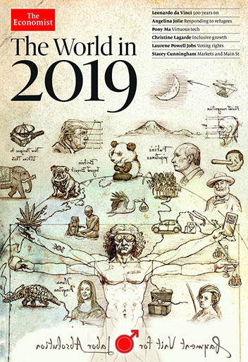

Cronica Modernă a PULEI:O Saga a Rezilienței
Povestea PULA of Dracula nu este o simplă istorie a unui memecoin. Este o odisee, o cronică a umorului și a spiritului românesc care refuză să se predea. Iată cum a început aventura modernă...
Capitolul I: Profeția (Anul Domnului 2018)
Pe forumul Bitcointalk, a apărut o idee: **Payment Unit for Labor Abolishment - P.U.L.A.** Un nume șugubăț, dar care ascundea o viziune. Se vorbea de unități precum "nimic", "fleac" și "hambar de P.U.L.A.". Sloganuri precum "Nu vinde P.U.L.A. cât e mică!" prindeau viață.
Unitățile de Măsură PULA:
1 PULA = 1.000.000 `nimic` | 1 PULA = 1.000 `fleacuri`
1 `roabă` = 1.000 PULA | 1 `căruță` = 1.000.000 PULA | 1 `hambar` = 1.000.000.000 PULA
Supply-ul final vizat: 8.250.000.000 de PULA (câte una pentru fiecare)
Mai exact, 8 cvadrilioane și 250 de trilioane de `nimic`.
Capitolul II: Anii de Bejenie și Încercări Grele (2019 - 2023)
Creatorul PULA a trecut prin încercări demne de basmele cu zmei: de la telefoane sparte (cu chei private în ele!), la episoade psihotice și traiul pe străzi. O perioadă în care PULA părea un vis pierdut.
Capitolul III: Renașterea cu AI (2024)
Ca un Phoenix digital, ideea PULA a renăscut cu ajutorul Inteligenței Artificiale. Gemini, ChatGPT, Grok – o armată de algoritmi au ajutat la rafinarea conceptului pentru o revenire spectaculoasă.
Capitolul IV: PULA Mică se Trezește pe Solana (Prezent)
Pe celebra platformă Pump.fun, **PULA of Dracula (PULA)** a văzut din nou lumina blockchain-ului! "PULA Mică" a început să-și facă simțită prezența.
Originile Preistorice: ADN-ul PULA
Dar povestea reală începe mult mai devreme. Acum 40.000 de ani, în peșterile din România, un spațiu al **colaborării** dintre Homo sapiens și Neanderthalieni. PULA este manifestul modern al acestei cooperări primordiale.
ADN-ul nostru este un mozaic, o dovadă a faptului că suntem produsul fuziunii, nu al purității. Am moștenit rezistența de la Daci, vigoarea de la războinicii din stepă și stabilitatea de la fermierii neolitici. PULA celebrează această diversitate ca fiind sursa noastră de putere.
Un om din Gorj avea mai mult ADN de Neanderthal decât tine. Acum e rândul nostru să moștenim înțelepciunea cooperării, nu instinctul competiției.
Acceptă PULA în viața ta. Este 100% Sapiens. Parțial Neanderthaliană. Și complet românească.
Filozofia Simbolului (♂)
Logo-ul PULA unește două forțe opuse, creând o sinteză dinamică:
- Cercul (♀): Forța Conservatoare. Reprezintă stabilitatea, tradiția, rădăcinile noastre adânci (cultura românească, istoria ADN). Este fundația solidă pe care construim.
- Săgeata (♂): Forța Progresistă. Reprezintă disrupția, inovația, mișcarea spre un viitor radical (viziunea "lumii fără bani", tehnologia AI). Este vectorul schimbării.
PULA folosește stabilitatea rădăcinilor "conservatoare" (cercul) ca fundație de pe care lansează vectorul "progresist" de schimbare (săgeata).
Marea Conspirație PULA
Și dacă toate acestea nu sunt coincidențe? De la profețiile de pe coperțile The Economist la mesajele ascunse în operele lui Creangă și Eminescu, PULA pare a fi veriga lipsă dintr-un plan cosmic.

Disclaimer Șocant de Onest: Toate informațiile din această secțiune sunt prezentate cu scop umoristic. Nu ne asumăm răspunderea pentru eventualele nopți albe petrecute căutând simboluri PULA în tablourile lui Grigorescu. Râdeți din toată PULA!